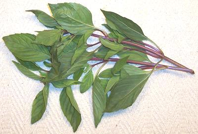

Thai Purple Basil

[Bai Horapha (Thai), Hung Que (Viet), Ocimum basilicum]
Now quite common in Southern California, this basil has good flavor and
reasonable keeping properties (almost a week if treated well).
In general the leaves are dark green with only a hint of purple, and the
stems are distinctly purple but there are also all-green varieties.
Of the Asian basils, this one is closest to
Italian Basil but is sharper and slightly
sweeter in taste. They can substitute for each other in a pinch.
More on Basil.
Buying:
Thai Purple Basil can be found in markets
catering to a Southeast Asian community. If a little wilted this basil
can be refreshed by cutting the stem ends off and immersing completely
in cold water for an hour, then dry in your salad spinner.
Growing:
Thai Purple basil is more resistant to
fusarium wilt than Italian basil. It usually has to be grown from
seed as plants are often not available.
Storing:
If fresh, Thai Purple Basil can be kept
loosely bagged in plastic in the refrigerator for about 5 days.
Freezing is not a good option because most recipes use it as fresh
whole leaves. Dried it's pretty much worthless.
Cooking:
The most common way this basil is used is as
a garnish or by stirring whole leaves into the recipe after it taking
off the heat and as close to serving as possible. In either case,
before you start cooking, remove the leaves from the stems and set
them soaking in cold water. Drain just before adding to the recipe.
With this treatment it will take the leaves a few minutes to start
to discolor rather than doing so instantly.
mt_basiltz 090524 - www.clovegarden.com
©Andrew Grygus - agryg@clovegarden.com - Photos on this
page not otherwise credited are © cg1 -
Linking to and non-commercial use of this page permitted